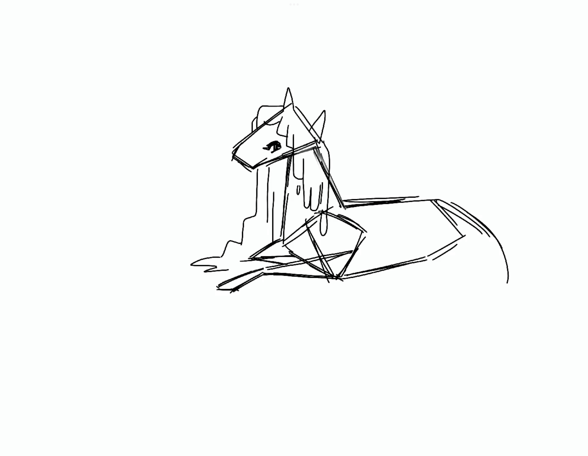
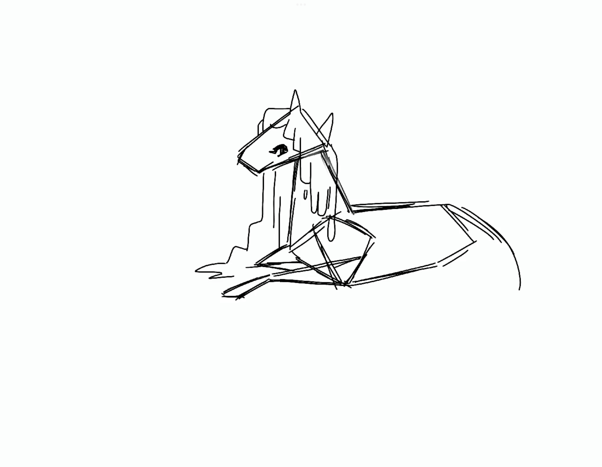

My Work
► PROJECT ONE : PET SALON


'Pet Salon' is a multimedia simulation created as a final project for IAT 265 (Multimedia Programming for Art and Design) in Spring 2022 at Simon Fraser University. The project consists of images, text and music implemented using Java to create an interactive simulation for the user.
In 'Pet Salon', the user is guided through a process of operating a dog grooming salon. The user can follow the instructions through series of mouse clicks, mouse drags, animations, and more.
The project required a basic set of criteria to be integrated within the simulation, this included: generate perlin noise graphics, use of recursion to create fractal graphics, and use of decorator patterns.
The perlin noise graphics were generated using a for-loop in Java which generated noise in the form of randomized values. These values are then used to create many grey circles that overlap each other to create an effect that emulates the texture of soapy suds. To further add variation to user interactions, the more soap that the user picks up, the more dense the perlin noise suds will look.
The fractal graphics require the use of recursion methods which means that a function in Java will call upon itself. Through the use of recursion, I was able to generate a plant graphic that branches out into smaller and smaller branches allowing it to resemble a life-like tree.
Finally, decorator patterns are used to dress up the dog towards the end of the simulation. The use of decorator patterns allows the users to add new functionality (in this case: dress-up objects) to an object (the dog) without altering the objects original methods. In 'Pet Salon', the user can add ribbons, bows and jewelery to the dog by clicking the bins that hold the items and then clicking anywhere on the dog to apply the decorator.
2022
► PROJECT TWO : THE GUARDIAN

'The Guardian' is a personal illustration project representing the mythical creature, Kelpie, in its environment.
This illustration was a challenge for myself back in 2021 to create an original piece of artwork every month focusing on mythical creatures. I find that mythical creates can be interpreted in a variety of ways so this allowed me to add a more personal touch to my illustrations. When working on this illustration, it took a lot of research in terms of anatomy, colour palette, environment of the background and the technique I wanted to apply to the illustration.
Kelpie are horse-like creatures so I had to study some horse anatomy to familiarize myself. I took images of horses in the pose I wanted and created red lines to study the basic shape of each part of the horse. I later applied these shapes to my initial sketch and eventually used these guidelines to stylize the creature.
 


For the environment, I wanted the Kelpie to be in the middle of a body of water. I looked for inspiration on of swamps which consist of mostly blues and greens.
2021